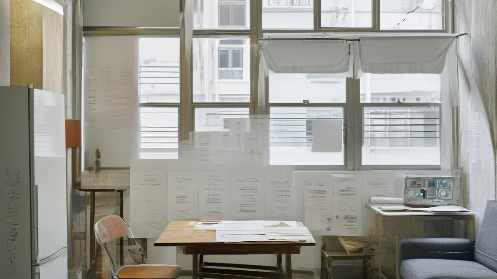
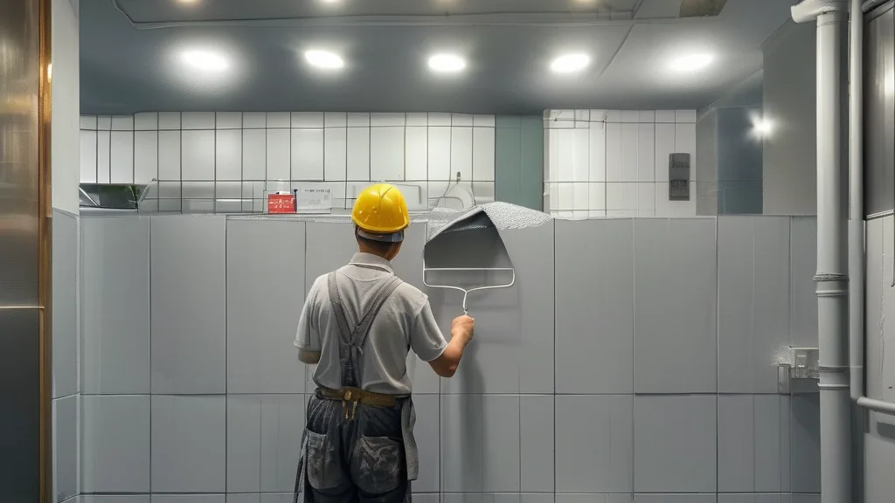
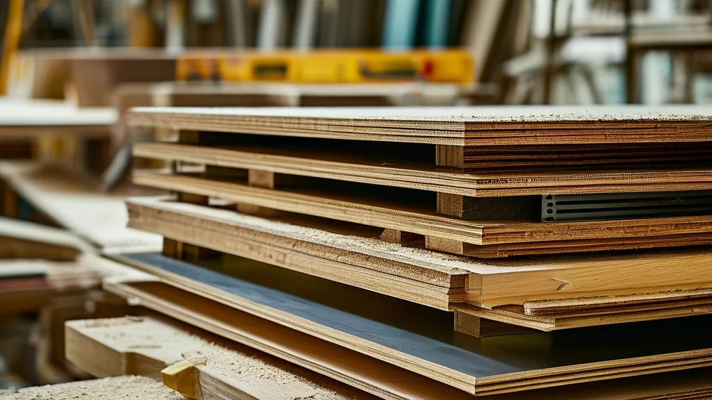
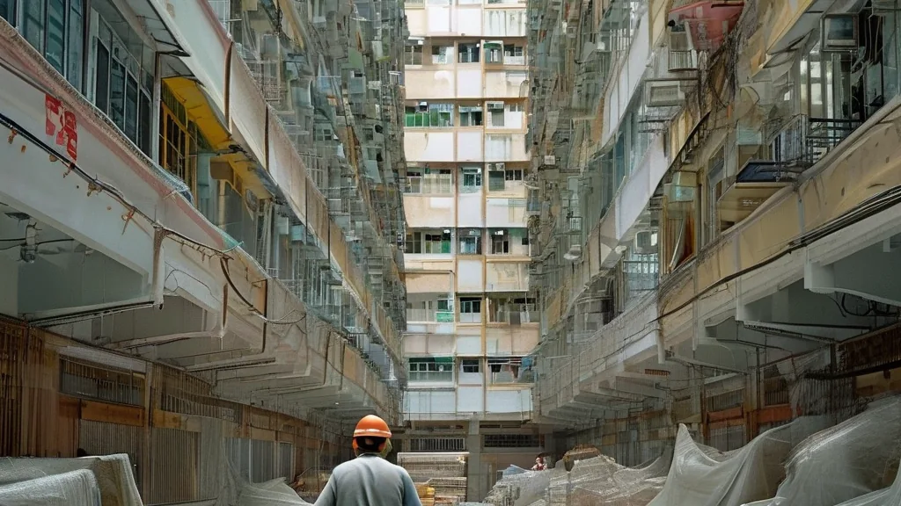

觀塘420呎差15%報價單：雄哥拆建造業盈餘跌4.5%

📍 場景：觀塘一幢 1980 年代落成單幢舊樓，420 呎兩房，12 樓｜主訪：雄哥（行內人叫法）｜同行：昌哥（泥水 28 年，觀塘、牛頭角、油塘舊樓為主）｜業主：阿儀｜記錄：雲蕾｜日期：2026 年 11 月 28 日｜WhatsApp 報價：852 5190 2328
序幕：十一月二十七日下午四點半，一組數字
11 月 27 日下午 4 時 30 分，政府統計處公布二零二五年屋宇建築、建造及地產業的主要統計數字。我睇完成段，喺手機備忘錄抄落幾個數：
建造業總收益 4,629 億元，按年跌 2.3%；營運開支及僱員薪酬 4,308 億元，跌 2.1%；盈餘總額 321 億元，跌 4.5%，只佔總收益 6.9%，比二零二四年再少 0.2 個百分點。全港約 26,100 間建造業公司，直接聘用 191,900 人，平均每間 7.4 人；平均每間公司一年收益 1,770 萬元、開支及薪酬 1,650 萬元，盈餘 120 萬元，跌 4.8%。
同一個調查亦包建築、測量及工程服務業：總收益 284 億元跌 2.3%，盈餘 28 億元，按年大跌 20.0%。
「呢啲數字同我哋做裝修有咩關係？業主睇報價單，唔會睇統計處。」
「有關係。呢個係我哋整行嘅水位。你手上嗰張報價單，係喺呢個水位上面浮嘅。水位退，價錢唔會即刻跌，但手工同工序會先跌。」
當晚七點，我哋就去咗觀塘，睇一個三張報價單嘅個案。
第一幕：一間公司一年賺 120 萬，你以為好多？
阿儀個單位 420 呎兩房，1980 年代單幢舊樓，12 樓。想全屋翻新：水電重做、廚房換櫃、兩間房訂造衣櫃、浴室重做防水同企缸。佢攞到三份報價：38 萬、36 萬、31.5 萬。最低同最高相差 6.5 萬，接近 17%。
「同一份圖，同一個範圍，點會差咁遠？係唔係頭兩間食水太深？」
我唔急答。先講返統計處嗰組數：平均一間建造業公司，一年做 1,770 萬元生意，減去 1,650 萬元開支同人工，賺 120 萬。即係每 100 蚊生意，賺 6.9 蚊。
「120 萬一年，一個月 10 萬。一間 7.4 人嘅公司，一個月 10 萬，扣租、兩架車、勞保同公眾責任保險、強積金、伙記年假、保養期免費上門、收唔返嘅尾數、投標前出嘅圖則同 3D，你話仲剩幾多？」
「即係報價單上面嗰行『管理費』，其實唔係利潤？」
「大部分係固定成本。固定成本省唔到，所以一張單要平 15%，只能喺四樣嘢度省：材料、工序、人手、合約。冇第五樣。」
呢句講完，阿儀靜咗幾秒，然後問：「咁我點知邊份係省咗？三份都寫得靚。」
第二幕：同一張圖，錢喺五個位流走
昌哥喺觀塘做泥水 28 年，最熟呢區嘅舊樓。佢拎起三份報價單，唔睇總數，逐行對。
第一，材料。衣櫃背板，一份寫 9 毫米夾板，一份寫「背板」，一份寫 5 毫米。鉸鏈，一份寫品牌同型號同緩衝，另外兩份只寫「緩衝鉸」。昌哥話，同一組衣櫃，背板由 9 毫米變 5 毫米，材料差價幾百蚊，但櫃背受力同防潮差好遠；鉸鏈由有牌子變雜牌，一對差幾十蚊，廿對就差過千，開合一萬次之後就見真章。
第二，工序。呢個係最貴嘅一項，亦係最難睇嘅一項。浴室防水，標準做法係底層清潔、塗兩層彈性防水、乾透後做 24 小時閉水測試，之後才鋪磚。昌哥喺其中一份單度搵到「防水工程」四個字，後面乜都冇。
「防水做一層同做兩層，材料錢差幾百，人工差一日。閉水測試要等 24 小時，即係要等多一日。趕單嘅時候，呢一日最容易被抽走。」
「但係我睇唔到佢有冇做喎。」
「你睇唔到，所以你要佢影相。塗完一層影一張，乾透影一張，閉水 24 小時之後影一張企缸水位。三張相，你唔使識做，都知佢有冇做。」
第三，人手。昌哥指住一份單嘅工期：「18 個工作天做全屋。」420 呎連水電泥水木作油漆，18 天不是做唔到，係要同一時間有四班人入場，而四班人唔可以係同一隊人做三場。當一間公司同時開三、四個地盤，師傅今日嚟你度，聽日去第二度，你單位嘅進度就變成「排隊等」。
第四，合約。三份單，只有一份寫明工期同逾期罰則；三份都冇寫變更（加減項）嘅處理方法；有一份嘅付款方式係「簽約付 50%，開工付 30%，完工付 20%」。昌哥搖頭：「開工前收八成，等於公司用你嘅錢開你嘅工。中途佢現金流出事，你嘅單位就停喺半路。」
第五，保養。兩份寫「一年保養」，一份冇寫。昌哥話，保養唔係口頭承諾，要寫明範圍：防水、漏水、門鉸、櫃桶路軌、油漆裂紋，邊樣包、邊樣唔包、幾多日內上門。
我喺現場同阿儀計咗一條數，佢即刻明：以 35 萬工程計，6.9% 盈餘即係 24,150 元。如果呢張單平 15%，即係少收 52,500 元。同樣成本之下，做一單要倒蝕 28,350 元。一間公司一個月做三單，蝕三單，你估佢會點做？
「咁即係平價一定係陷阱？」
「唔係一定。有啲公司規模細、寫字樓係自己、老闆自己落場，成本真係低過大公司，平 8% 至 10% 做得出。但平 15% 以上又乜都唔寫，你就唔係買到便宜，你係買到一張未寫清楚嘅合約。」
第三幕：對業主同師傅，分別意味啲乜
先講業主。呢組數字對你嘅意思係：行業整體賺錢薄，所以「靠公司自律」唔可靠，你要靠合約同紀錄。五條可以照做：
一，三份報價要同圖同比。同一份施工圖、同一張物料表發俾三間，唔好一間用你口述、一間用佢自己畫。唔同圖嘅報價，比唔到。
二，唔接受「一式」。每一個項目最少要有：位置、尺寸、材料名稱、品牌型號、厚度、數量、單價。寫唔出型號嘅行，就係將來最容易出事嘅行。之前寫過長沙灣業主睇報價單嘅三個破綻，講嘅就係同一件事。
三，付款節點 3-3-3-1。簽約 30%、水電泥水完成 30%、木作油漆完成 30%、驗收合格 10%。再加 5% 保留金（可喺最後一期扣），保養期滿才付。呢個比例唔係行規，係要談返嚟嘅。
四，合約要有工期同罰則。例如每日 0.1%、上限 10%。同時寫明「變更單」：任何加減項，要書面報價、你簽字確認後才開工，唔好接受「做完先講幾錢」。
五，查公司撐唔撐得住。商業登記、過去兩年同類單位案例、要求睇一個正在施工嘅地盤。大額工程可以問有冇履約擔保，或者分期付款時要求公司提供材料訂單。
再講師傅同公司。昌哥講得坦白：「平價中標，最先出事唔係手工，係現金流。公司收唔夠錢，就先拖材料錢，再拖師傅糧。好師傅走，剩低嘅人趕工，兩年後保養期爆，公司又要貼錢，越做越薄。」統計處嗰個 6.9%，就係呢個循環嘅結果：盈餘跌 4.5%，建築測量及工程服務業盈餘跌 20%，唔係單一年嘅事，係整個行業嘅水位向低走。
「咁你哋自己投標，會唔會定一條線，唔接低過某個價？」
「會。低過成本 8% 唔接，因為接咗一定要喺某個位省返，到時兩邊都輸。投標文件亦要寫清楚『不包』範圍：舊牆身空鼓點算、暗喉要唔要換、大廈管理處收費邊個俾。寫清楚，先叫平。」
阿儀最後冇揀最平嗰份，亦冇揀最貴。佢揀咗 36 萬嗰間，但要求對方補三樣：物料型號表、防水三張相、工期罰則寫入合約。對方補咗，價錢冇加。

尾聲：報價單最貴嗰行，通常唔係銀碼最大嗰行
離開之前，昌哥喺樓下同我講咗一句：「做咗廿八年，我未見過有業主因為省咗一萬蚊而開心三年；但因為省咗一萬蚊而煩三年嘅，我見好多。」
呢個行業嘅盈餘率得 6.9%，即係話，任何一張低於成本嘅單，都一定要有人找數。多數時候，找數嘅係兩年後嘅你：之前寫深水埗頂層天花滲水兩年，業主最後付嘅錢，遠遠多過當初省落嘅。
大維修同室內裝修撞期嘅情況，我亦喺觀塘郭太個案講過：次序排錯，錢一樣白花。合約寫得清，工程才做得穩。
最後一句，我照原話寫落嚟：你要嘅唔係最平嘅公司，係一間三年後你仲搵得返人嘅公司。


❓ 裝修報價三問
Q1：三份報價相差 15%，係唔係一定揀中間或者最貴？
唔係。價錢要配合範圍睇。先要求三間用同一份圖、同一張物料表報價，再逐行對尺寸、型號、厚度、工序次數。如果最平嗰份嘅範圍同另外兩份一樣、物料型號寫得清楚、付款節點合理，佢可以係好選擇。判斷標準係「寫得清唔清」，唔係「貴唔貴」。
Q2：付款節點點定？開工前付幾多才算合理？
常見做法係 3-3-3-1：簽約 30%、水電泥水完成 30%、木作油漆完成 30%、驗收合格 10%，另加 5% 保留金於保養期滿支付。開工前付超過五成，等於公司用業主資金開工，一旦現金流出事，單位就會停喺半路。每期付款前要對應完成項目同相片紀錄，唔好只按日曆付款。
Q3：點樣查一間裝修公司撐唔撐得住？
三樣：商業登記同公司註冊資料、過去兩年同類單位嘅完工個案（可以要求聯絡方式或現場照片）、以及一個正在施工嘅地盤。另外要問清楚公司係自己養師傅定全部外判，因為外判比例高嘅公司，工期同手工都較難控制。以上屬商業盡職審查嘅做法，唔涉及任何法律或財務建議。
本文配圖均為 AI 場景示意圖，僅供場景參考，並非真實工地照片或業主影像。文中價格為故事報價，實際以度尺及圖則為準。
手上三份報價，唔知邊份寫得清？發俾我睇，我逐行同你對。
📱 一鍵 WhatsApp 雄哥